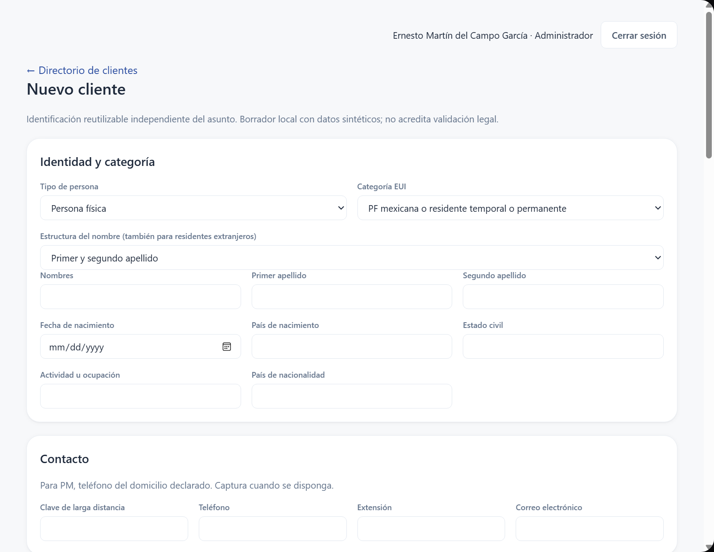
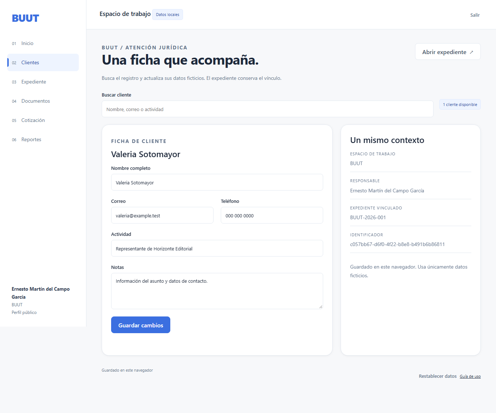
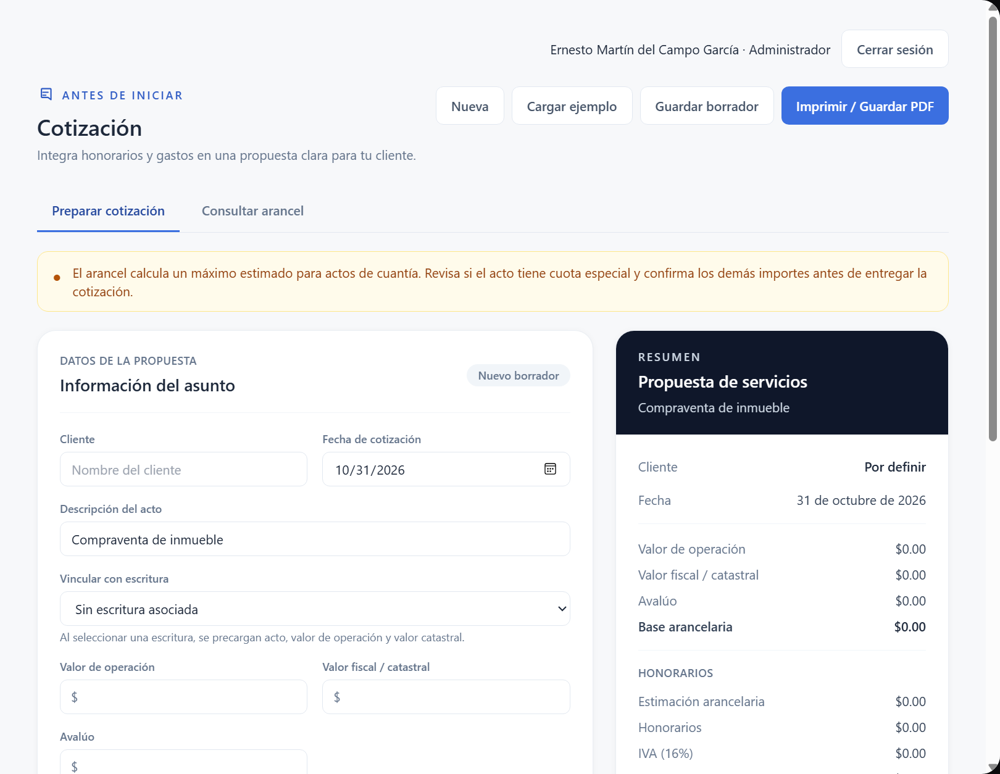
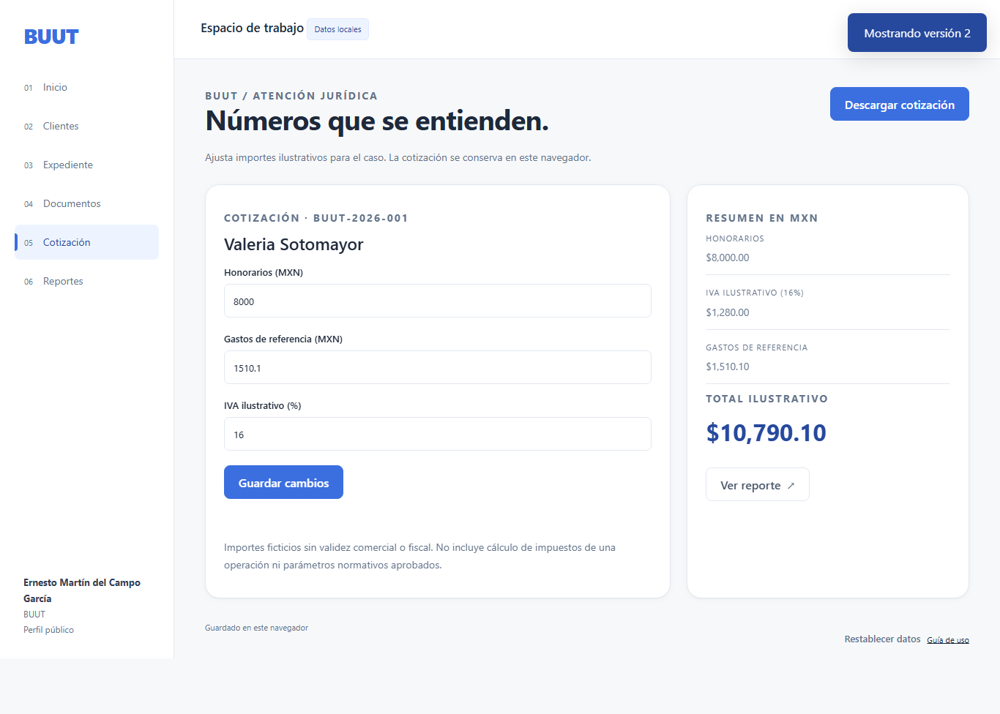

Aplicación local
Tema claro, lectura normal. Ventana Tauri/WebView2, perfil aislado sin datos habituales.


BUUT
Azul #3b6fe0, variantes #2f5bc4 y #26499e, tipografía Inter con las alternativas de sistema de BUUT, fondos #f7f8fa, tarjetas blancas, bordes y estados de navegación.
Tema claro, lectura normal. Ventana Tauri/WebView2, perfil aislado sin datos habituales.

La misma familia de botones, campos, bordes y superficies.



Referencia local: revisión 5907a2e. Se comparan estilos y pantallas; el alcance funcional de cada interfaz corresponde a sus controles disponibles.